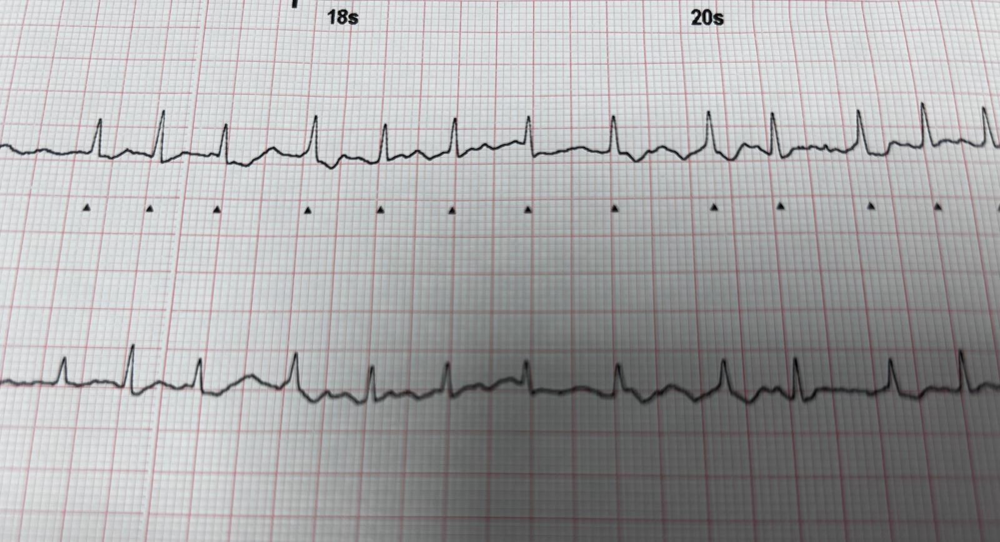
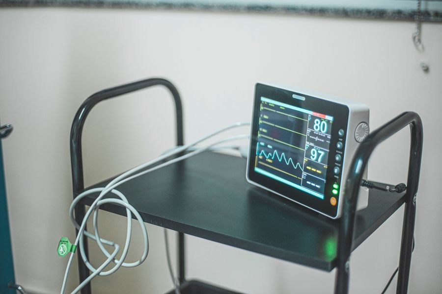

Places molt reduïdes
Màxim 12 persones per garantir una formació quasi personalitzada, amb feedback immediat i pràctica supervisada al 100 %.
La diferència entre aprendre i continuar sentint por és que t'acompanyin des dels inicis. 10 hores presencials en entorn de simulació clínica per dominar l'ECG de 12 derivacions, de la col·locació dels elèctrodes a la lectura del traçat.
Formació presencial de 10 hores adreçada a professionals d'infermeria, Tècnics en Emergències Sanitàries i Tècnics en Cures Auxiliars d'Infermeria, enfocada a la correcta realització d'un electrocardiograma —amb col·locació estàndard dels elèctrodes, derivacions dretes i posteriors— i al reconeixement i la interpretació dels traçats electrocardiogràfics bàsics.
L'objectiu principal és oferir eines pràctiques i teòriques per comprendre l'activitat elèctrica cardíaca, identificar patrons normals i detectar alteracions que puguin requerir actuació mèdica urgent.
Formació clau per al nou concurs de TES a Catalunya (2025-2026). Avança't a les competències que s'exigiran oficialment i millora el teu perfil professional.

Tot el que necessites per sortir sabent fer un ECG i llegir-lo amb criteri.
Cinc competències que podràs aplicar el mateix dia a la teva unitat.
Perdre la por a l'electrocardiograma i construir una base sòlida i pràctica des del primer minut.
Dominar l'ECG de 12 derivacions, incloses les derivacions dretes i posteriors, amb una tècnica segura i sense errors.
Interpretar amb seguretat els traçats bàsics i detectar les alteracions que requereixen actuació urgent.
Integrar l'ECG a la pràctica real amb tallers i simulacions que reprodueixen escenaris d'urgències i emergències.
Guanyar confiança i rapidesa diagnòstica en les patologies temps-dependent.
Grups petits, material real i docents en actiu: les tres coses que converteixen una classe en una pràctica útil.
Màxim 12 persones per garantir una formació quasi personalitzada, amb feedback immediat i pràctica supervisada al 100 %.
Experiències d'aprenentatge en entorn simulat que permeten integrar els continguts apresos.
Professionals que treballen cada dia amb ECG en emergències i UCI, no només formadors teòrics.
Un espai on equivocar-se forma part de l'aprenentatge i on es pregunta sense por.
Esmorzar i berenar perquè només t'hagis de centrar en aprendre.
Accés a un grup privat per resoldre dubtes i analitzar casos clínics després del curs.
Pensada per a professionals que volen una base sòlida de lectura d'ECG aplicada a la pràctica assistencial, sense donar res per sabut.
Grups reduïts i places limitades: la inscripció es formalitza per ordre de reserva.
Títol acreditativo a part: 30 €.
Material real, entorn de simulació i pràctica individual supervisada.



Si et queda qualsevol altra pregunta, escriu-nos i et responem personalment.
No. La formació està pensada «des dels inicis»: comença per la col·locació dels elèctrodes i la lectura del traçat bàsic, i avança fins a la interpretació de casos reals.
La formació té sol·licitada l'acreditació oficial del Consell Català de Formació Continuada, amb 1,8 crèdits. El títol acreditativo s'obté per 30 € addicionals.
Sí. Pots fraccionar el pagament fins a 3 mesos sense interessos amb Klarna.
Tens accés a un grup privat de mentorització per resoldre dubtes i analitzar casos clínics sempre que ho necessitis.
Màxim 12 persones per convocatòria. Si vols assegurar la teva plaça a Parets del Vallès, no ho deixis per a l'últim dia.